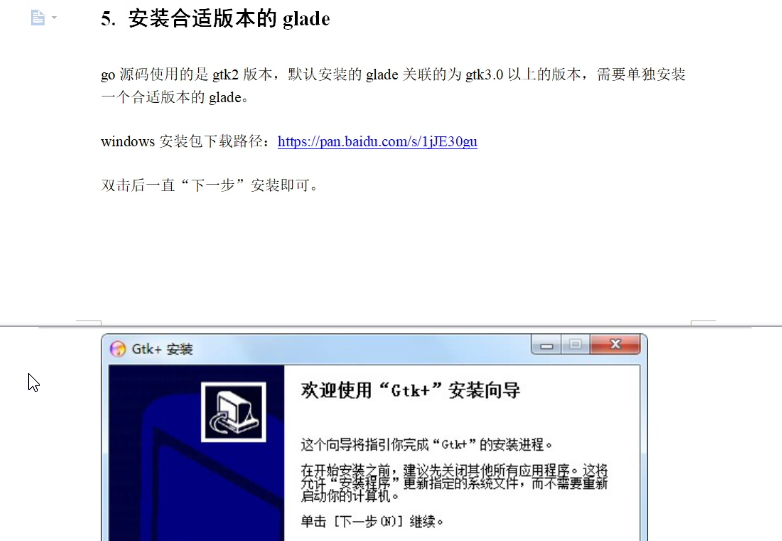
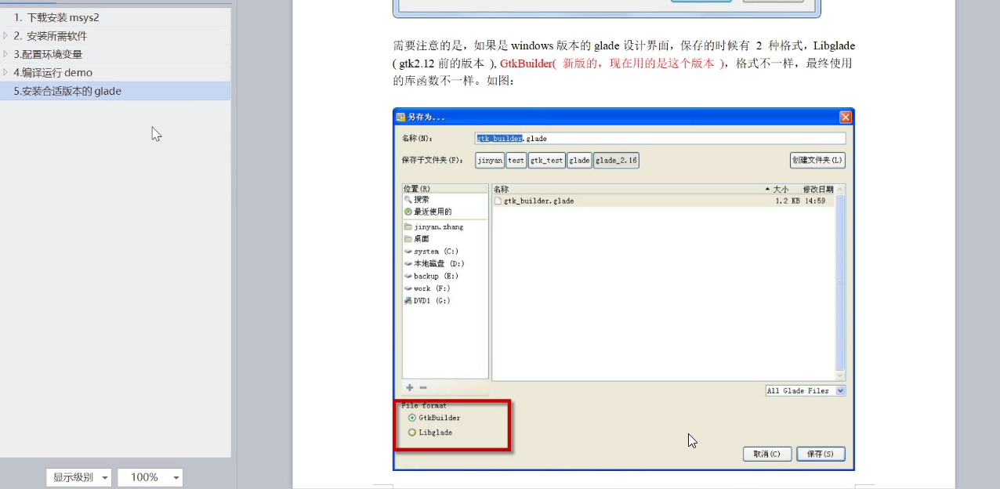

原文出处:本文由博客园博主跌倒的小黄瓜提供。
原文连接:https://www.cnblogs.com/ygjzs/p/11932222.html
原文连接:https://www.cnblogs.com/ygjzs/p/11932222.html
go-gtk环境配置（用于go的图形化界面）
弄了一天，终于把这个环境给搭建好了，差不多就是安装msys2-》安装gtk的各个版本-》安装mingw（我原来装有但不影响，因为重复了，环境变量还得改到现在这个，所以原来装那个就没用了，也不忍心卸没留着吧）-》所以安装go的源码（SDK环境我之前就已经配置好了，所以这里不需要在考虑SDK了），还有一点是先官方的下载太慢，就切换镜像源，我这里用的全是清华的源，下面的步骤比包括我在清华的源的下载，若下面的步骤安装有误，考虑去清华的源找找看。
然后就是我的第一个图形化的代码，哈哈哈
package main
import (
"fmt"
"os"
"github.com/mattn/go-gtk/gtk"
)
func main() {
gtk.Init(&os.Args)
win := gtk.NewWindow(gtk.WINDOW_TOPLEVEL)
win.SetTitle("go gtk")
win.SetSizeRequest(480, 320)
win.Show()
fmt.Println("before")
gtk.Main()
fmt.Println("over")
}

